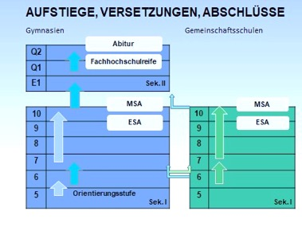
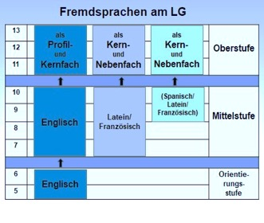
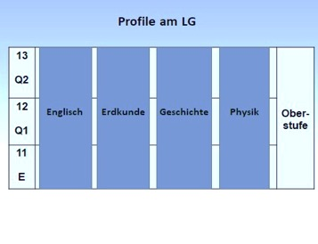
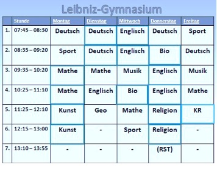
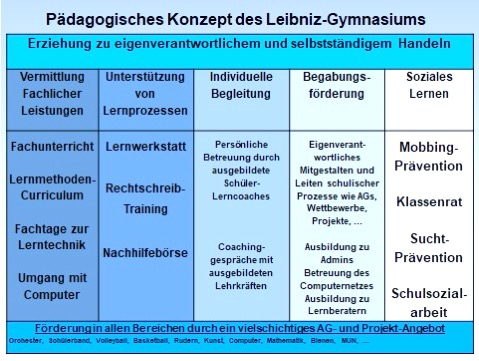

Informationen zum Leibniz-Gymnasium
Derzeit werden 358 Mädchen und 300 Jungen im Leibniz-Gymnasium Bad Schwartau unterrichtet. Hierfür stehen 31 Klassenräume und 16 Fachräume, je zwei Kunst- und Musikräume, eine 3-Felderhalle sowie eine kleine Halle, ein Raum für das Fach Darstellendes Spiel und weitere fünf besondere Räume (z. B. Küche, Werkraum) für den Unterricht zur Verfügung. 50 Lehrerinnen und Lehrer, 4 Referendarinnen und Referendare unterrichten unsere Schülerinnen und Schüler. Sie werden tatkräftig von einem Schulsozialarbeiter und einer FSJ-lerin unterstützt. (Stand: 10.01.2021)
Unsere oberste Zielsetzung am Leibniz-Gymnasium besteht darin, einen soliden, effektiven Fachunterricht zu ermöglichen, bei dem die Schüler/-innen sich wohl fühlen und auf sicheres Wissen zurückgreifen können. Weil wir sie fit machen wollen für das Leben in unserer Gesellschaft, legen wir besonderen Wert auf die Erziehung zur Selbstständigkeit, für die wir den Heranwachsenden Freiräume zur Selbstbestimmtheit schaffen.
Gymnasiale Rahmenbedingungen
Das Leibniz-Gymnasium als G9-Gymnasium
Aufstiege und Versetzungen
Wie an jedem Gymnasium bilden die 5. und 6. Klasse die Orientierungsstufe. Während dieser zwei Jahre erhalten die Kinder die Möglichkeit zu überprüfen, ob die Arbeitsweise und der Leistungsanspruch am Gymnasium zu ihnen passen und ob sie diesen Anforderungen gewachsen sind. Durch diesen Rahmen ergibt sich eine insgesamt homogene Klassenzusammensetzung, durch die eine gute Voraussetzung dafür besteht, dass die Schüler /-innen sich gegenseitig mitziehen.
Am Ende der 6. Klasse wird über eine Versetzung in die Mittelstufe oder eine Schrägversetzung in die 7. Klasse der Gemeinschaftsschule entschieden (siehe „Orientierungsstufe“). Dabei ist zu beachten, dass die Gemeinschaftsschulen des jeweiligen Ortes nur nach Klasse 6 verpflichtet sind, Schulwechsler aufzunehmen.
Während der Orientierungsstufe liegen die Schwerpunkte unserer pädagogischen Arbeit darauf, ein gutes Klassenklima zu schaffen, um Mobbing zu verhindern und in Zusammenarbeit mit Eltern und Grundschulen die Stärken der Kinder zu fördern und bei Problemen Hilfestellungen anzubieten.
In der Mittelstufe durchlaufen die Schüler/-innen die Klassen 7-10, bei schulischen Problemen gibt es die Versetzungen unter Vorbehalt, Wiederholungen oder auch Schrägversetzungen an eine Gemeinschaftsschule. Gerade in dieser Phase der Pubertät besteht das Ziel, die Jugendlichen so zu fördern, dass sie am Leibniz-Gymnasium eine erfolgreiche Schulzeit erleben, daher werden verschiedene Fördermaßnahmen angeboten.
In den drei Jahren der Oberstufe (E1, Q1, Q2) werden die Schüler/-innen in ihren kognitiven, emotionalen, sozialen, kreativen und körperlichen Fähigkeiten so gefördert, dass sie gut gerüstet sind für ein Studium oder für eine sich anschließende Berufsausbildung, für die eine umfassende Berufsorientierung angeboten wird. Vor allem aber soll das Lernen am Leibniz-Gymnasium Raum für die individuellen Stärken der Schüler/-innen bieten.
Abschlüsse
Am Gymnasium können alle vier möglichen Abschlüsse erreicht werden:
- mit Versetzung in die 9. Klasse der ESA (Erster Allgemeiner Schulabschluss)
- mit Versetzung in die 10. Klasse der MSA (Mittlerer Schulabschluss)
- mit Versetzung in die 12. Klasse der schulische Teil der Fachhochschulreife - am Ende der 13. Klasse/Q2 das Abitur.
Die Fremdsprachen am Leibniz-Gymnasium
Am Leibniz-Gymnasium werden insgesamt vier Fremdsprachen angeboten: 
5. Klasse: Englisch als 1. Fremdsprache: verpflichtend
7. Klasse: Lat./Franz. als 2. Fremdsprache: verpflichtend
9.Klasse: Lat. / Franz. / Span. als 3. Fremdsprache: Angebot
Oberstufe:
- Englisch als 4-stündiges Profil- oder Kernfach
- Lat./Franz./Span. als 4-stündiges Kernfach oder als 3-stündiges Nebenfach
Die Profile am Leibniz-Gymnasium
Das Angebot der Profile am Leibniz-Gymnasium orientiert sich einerseits an den Wünschen und Stärken der Schüler/-innen, andererseits an der Anwendbarkeit für das Berufsleben.
Das Stundenangebot am Leibniz-Gymnasium
Halbtagsschule
Die Kernzeit des Unterrichts umfasst die 1.-6. Stunde, also die Zeit von 7:45 – 13:00 Uhr. Dabei haben die 5. Klassen in der Regel 28 Wochenstunden mit einer zusätzlichen Klassenratsstunde (KR) und die 6. Klassen 29 Stunden.
Es gibt aber auch die Möglichkeit, freiwillig länger zu bleiben, denn für den Nachmittag besteht ein vielfältiges freiwilliges AG- und Förder-Angebot (siehe „Pädagogisches Konzept“), andererseits kann der Nachmittag aber auch für die Pflege von Hobby und Freizeit frei bleiben.
Fächerkanon
Als naturwissenschaftliches Fach erhalten die 5. und 6. Klassen Biologie, daneben ist die Einrichtung einer Physik-AG geplant und auch das Angebot von Informatik zur Vermittlung von ersten Computerkenntnissen ist vorgesehen. In der 6. Klasse erhalten die Kinder Unterricht in dem Fach Darstellendes Spiel.
Doppelstundenblockungen:
Zur Reduzierung der Hausaufgaben und um das Gewicht der Schultaschen zu reduzieren, werden, wo es möglich und sinnvoll ist, Unterrichtsstunden zu Doppelstunden geblockt.
Soziale Förderung:
In den Klassenratsstunden, die zu Beginn der 5. und 7. Klasse eingerichtet sind, können die jeweils angefallenen Probleme der Klasse gemeinsam gelöst und demokratisches Handeln geübt werden. Zudem werden durch Mobbing-Präventionstage Angriffe auf einzelne vermieden und der Zusammenhalt der Klasse gestärkt. Einen besonderen Schwerpunkt nehmen auch die HandyScouts ein, die bereits mit den 5. Klassen Strategien gegen Cyber-Mobbing entwickeln. Durch ein nach Jahrgangsstufen differenziertes Konzept wird außerdem mit den Schülerinnen und Schülern zur Sucht-Prävention gearbeitet (siehe Pädagogisches Konzept).
Das Pädagogische Konzept des Leibniz-Gymnasiums

Link zum Informations-Flyer
Unseren aktuellen Flyer können Sie sich hier herunter laden.


 Liebe Eltern der 5. Klassen,
Liebe Eltern der 5. Klassen,